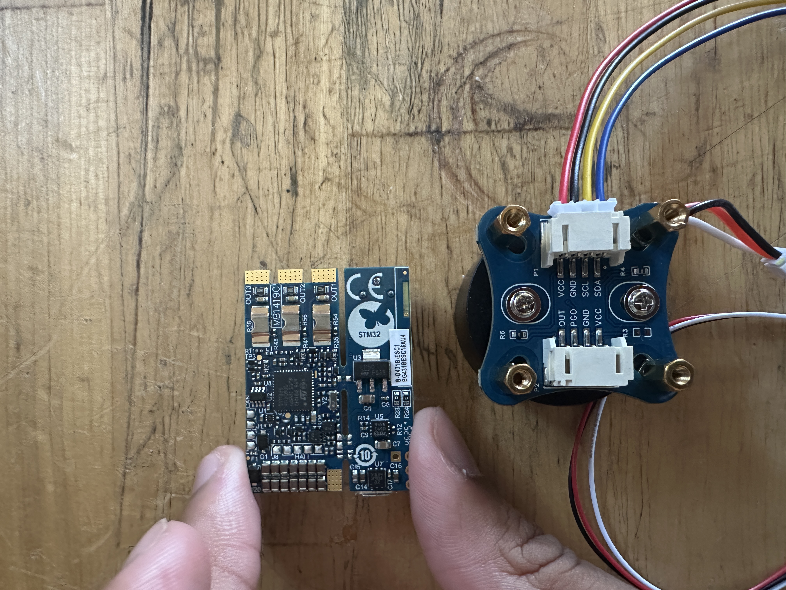
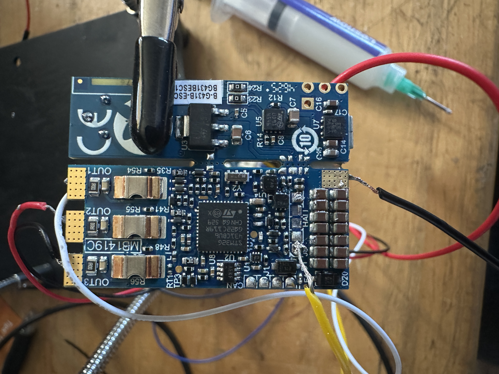
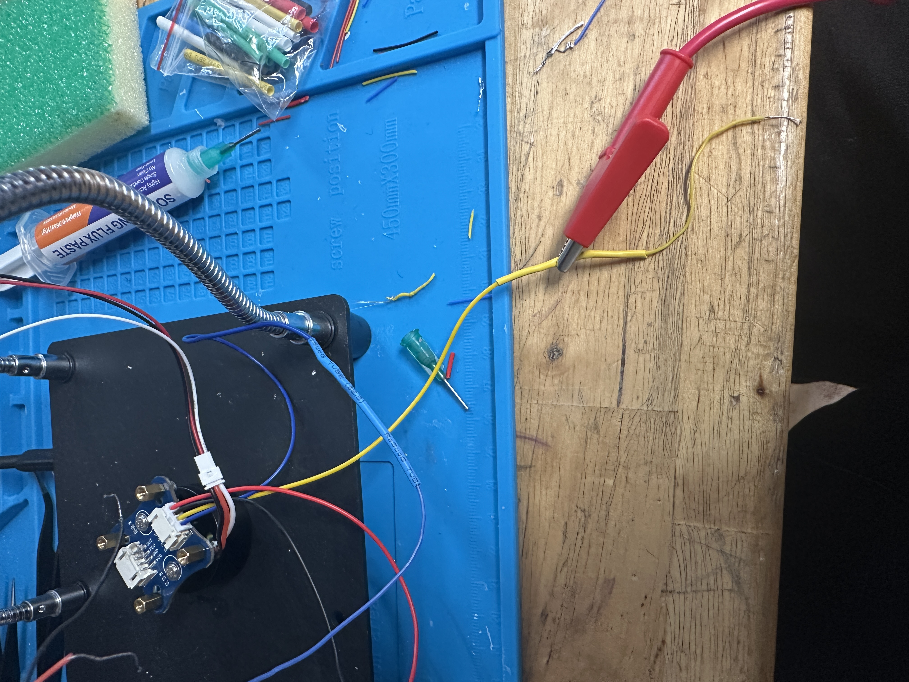

The idea
A servo can hold an angle. It has no idea how to push back with a specific amount of force — soft, hard, springy, whatever you tell it. That's the gap between a robot that just moves and one that can actually touch something safely. Field-Oriented Control (FOC) is how you close that gap: it lets you control how much torque a brushless motor puts out, not just where it points.
This project is a sensored FOC controller running on a bare STM32, driving a small BLDC gimbal motor. The long-term idea is a "unit cell" for a humanoid robot joint — eventually a programmable haptic knob you can actually feel push back on command.
Going in, I set one rule: write the control algorithm myself. SimpleFOC exists and works fine, but using it would mean skipping the part where I actually understand why any of this works. Buying an STM32 board, a motor, a magnetic encoder — that's normal. Writing the math that turns raw sensor data into torque had to be mine.
Learning the physics first
Before writing any code, I worked through why a stator's magnetic field produces maximum torque when it's held 90° ahead of the rotor's magnets, and almost none when pointed straight at them. That's the whole reason FOC exists — hold that 90° lead, continuously, no matter how fast the rotor is spinning.
The thing that trips people up first: the rotor doesn't have one north pole, it has several magnet pairs arranged around the shaft — seven, for this motor. One mechanical rotation is actually seven electrical cycles from the stator's point of view. Forget to multiply by that pole-pair count and the motor just buzzes — the stator's "arrow" updates seven times too slow to ever catch the rotor.
Deriving the math
The core of FOC is a change of reference frame. Three phase currents swing
sinusoidally as the motor spins, which is basically impossible for a simple controller
to hold steady since the target keeps moving. The Clarke transform collapses those
three phase currents down into two, then the Park transform fixes the real problem:
mathematically jump onto a frame spinning with the rotor, and those swinging currents
turn into two steady DC values — Id (wasted, non-torque-producing current,
held at zero) and Iq (the actual torque knob).
I derived each transform myself instead of looking up the formulas. Park and
inverse-Park came straight out of 2D rotation geometry — a stator axis rotated by the
electrical angle is literally (cos θ, sin θ), and the perpendicular
partner falls out of that. The Clarke inverse took actual algebra: substitution,
clearing a √3 denominator, isolating a variable, combining like terms —
worked by hand and checked against known test cases before any of it touched the board.
The last piece, a PI current controller, needed something I hadn't used in C before: pointers. A controller has to remember its running integral term between calls, but a normal function forgets everything once it returns, and passing a struct by value just hands it a disposable copy. The fix is passing the address of one real struct, so the function can reach back and modify the original instead of a copy that vanishes.
Every transform got tested in isolation on my laptop before it ever touched the board — known inputs, hand-calculated outputs, and round-trip checks: rotate forward, rotate back, confirm you land exactly where you started.
Bringing it to hardware
With the math proven correct on paper, the real board work started: a B-G431B-ESC1 (STM32G431 + integrated gate driver), a small gimbal motor, and an AS5600 magnetic encoder. First milestone was the simplest possible proof of life — open-loop spin, no feedback at all, just a commanded angle ramped blindly and driven straight into three-phase PWM. It worked. The motor turned.
Next came real sensing. I brought up I2C from scratch to read the AS5600's raw angle register, then hit the second classic FOC gotcha: the encoder's "zero" and the motor's true electrical zero have no relationship to each other. They're two independently-mounted physical reference points. Fixing that meant an actual calibration step — hold the motor at a known, fixed electrical angle using the open-loop drive, let the rotor physically settle into that position, then read whatever the encoder reports at that exact moment. That single number becomes a permanent offset, subtracted from every future reading for the life of that specific physical assembly.
Current sensing came next, and it was a genuinely harder peripheral bring-up than I2C — the board doesn't expose current directly on an ADC pin. It routes each phase's tiny shunt voltage through the STM32G4's internal op-amps (in PGA mode, gain of 16), which then feed an ADC channel entirely inside the chip. Getting the CubeMX configuration right took a real dig through the board's official documentation to confirm exact pin mappings, plus one specific gotcha where the ADC's internal channel stayed grayed out until I found the right op-amp mode ("internally connected," not just "connected") in a tooltip.
The hardware debugging saga
This part doesn't show up in a bullet point, but it's honestly the most real engineering work in this project.
Board #1 died first — a torn PCB pad while soldering the encoder's I2C wires, an early soldering-technique problem, not a design flaw. That meant a full board replacement and, more usefully, forced me to actually get good at fine soldering: flux first, heat the pad (not the wire), let it wick in, anchor every wire for strain relief. That technique held up for everything after.
The encoder and motor wires became their own problem along the way. After enough re-soldering attempts, the original wires got too short and too brittle to keep working with safely, so I had to learn proper wire splicing: cut back past the damaged section to solid copper, solder on a fresh length of wire, heat-shrink the joint. A small skill, but a necessary one once the original wire wasn't usable anymore.
Board #2 got further — encoder working, current sensing bringing up real readings off real hardware — before a different failure: the motor's phase wires briefly touched each other during handling, more than once, tripping the power supply into current-limit mode each time. Eventually the board started buzzing erratically and drawing current with zero actual motor output. I diagnosed it the way you'd diagnose any hardware fault: isolated the encoder wiring first (clean), checked every pair of phase outputs for unwanted continuity (found it — all three phases shorted to each other), checked whether that short reached ground or the supply rail (it didn't, phase-to-phase only), then re-did the external wiring entirely to rule out a bad joint (short persisted). That combination pointed at something external tools couldn't fix: internal damage inside the driver chip's switching transistors, most likely from the repeated short-circuit stress.
Two boards down isn't a skill problem. The first failure was a soldering-technique gap that's closed for good now. The second is a wire-handling lesson — heat-shrink every phase connection before power, always — that makes a third attempt meaningfully lower-risk, not a repeat of the same mistake.
Where it stands
The project is honestly paused right now — I'm waiting on getting a replacement board, since I've already put a decent amount of money into this project and the supplies for it. But that pause doesn't touch the actual hard work — every transform, the PI controller, the encoder calibration logic, and the current-sensing bring-up code are done, tested, and sitting in the repo, ready to reflash onto new hardware with basically zero rework. What's left is finishing current-sensing verification under real load, wiring the math into a proper timer-interrupt-driven control loop instead of the current polling-based test code, and then closing the loop for real torque control.
The stretch goal once torque control is solid: the impedance-control demo, programmable stiffness and damping, the actual haptic-knob payoff.
Gallery

The board + motor

Encoder wiring gone wrong

Learning to splice wire